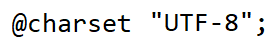

Cascading Style Sheets
Cascading Style Sheets is a language used to specify the presentation of structurally marked up documents
It is an instrument for adding styles like changing your font color
and adding a background to your web document. CSS is applicable to HTML, XML, SVG, and MATHML.
Version History
- CSS Level 1: Dec 1996
- CSS Level 2: May 1998
- CSS Level 2.1, (aka 2 Revision 1): June 2011
- CSS Saga - 1994 Hakon
- CSS Level 3 - Modular approach to CSS Development as opposed to the monolithic specification of CSS 2.1
HTML Stylesheets
Author styles
- Extended (aka linked) stylesheets (recommended)
- Embedded (aka internal)
- Inline styles
User Styles
- non-standard
- Some browsers provide (non standard) alterations through plug extensions
- stylish
User Agent Styles
- has its own rendering
- Sample default user agent stylesheet from CSS 2.1
CSS Statements
A building block that starts with any non-space characters and
ends at the first closing brace or semi-colon.
- CSS Rule Set - the one that is usually used.

- At-rules - instructions for css on how to perform or behave. It begins with the charcter @.

CSS Selector
CSS selector are series of selectors separated by combinators that allows styling of either a part of the document or the whole.
Simple Selectors
- May begin with a universal selector (*) which is not necessarily typed or a type selector.
- Cannot contain other type selectors or universal selector.
Selector Group
- A comma separated list of selectors representing the union of all element.
Combinators
- These are the symbols thats can be used to refer to an element in your html document.
- Some of these are:
- Descendant Combinator ( whitespace )
- Child Combinator ( > )
Rule Presedence
An HTML element maybe a subject of selectors of multiple style rules. When such rule target different properties, their effects cascade or are combined.But when the styles involve the same property, a conflict will arise as to what property should be applied.
Note: The conflict must be resolved such that only one style must be applied.
Some factors which affect the precedence of CSS Statements.
- Origin and Importance
- Specificity
Properties
Vendor-specific extensions
- Also known as Vendor Prefixes
- It is used by browser vendors as a prefix for the names of experimental or non standard css properties; lately, vendor are moving away from vendor prefixes in favor of user controlled flags or preferences.
- examples: -webkit-, -moz-, -o-
- It is recommended that all the prefixes will be included to your site
Custom-Properties : css variables [experimental]
- If the variable cannot be used, it will use the alternative
Values
Value Processing
- declared(explicitly specified), cascaded, specified, computed, used, actual values
Value Types
- Keywords
- CSS-wide Keywords
- initial - default
- inherit - inherits the attribute of the parent tag
- Unset - inheriit the attribute of the parent tag if there is any, otherwise, it use the default
- Property Specific - there are values that can be inherited and there are some that cannot be.
- Numbers
- Dimensions (length, angle, duration(or time), frequency, resolution)
Units
length
- Font-relative: em, ex, ch, rem
- Absolute: cm, mm, in, pt, pc, px
angle
- deg, grad, rad, turn
- Used in some gradient and transformed funtions
duration
frequency
- Hz ,kHz
- Initially introduced in CSS2
resolution
percentages
- a number with a symbol % suffix
- URL's and URI's
- url() funtions with absolute and relative relative parameter
colors
- color keywords (ex. red)
- Hexadecimal (ex. #f5f5f5)
- RGB () (red, green, blue)
- HSL () (hue, saturation, lightness)
- current color, transparent
strings
- delimited by single '' or ""
functions
- contains arguments that sometimes have required values
- Used in some gradient and transformed funtions
Preprocessors
Converts non-CSS statements into actual stylesheet
examples
- Sass - Syntatically Awesome Stylesheet
- Less